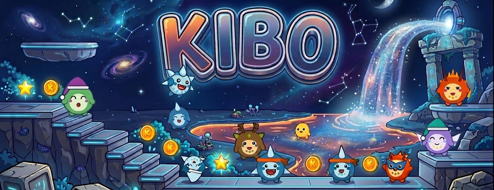

Il mostro ha 7 stati determinati in tempo reale. Gli stati di allenamento (rilevati dal movimento) hanno la priorità più alta, poi lo stress (≥ 70), infine la Body Battery. Di notte, nella finestra di sonno del profilo, il mostro dorme.
mood 6; Allenamento leggero → mood 5; Stress ≥ 70 → mood 4; altrimenti Body Battery: ≥70 → Iper (3), ≥20 → Attivo (2), <20 → Stanco (1). La finestra di sonno forza mood 0 (Dorme).Finestra di sonno: occhi chiusi, ZZZ fluttuanti
Occhi socchiusi con palpebra pesante, bocca neutra
Occhi aperti e vivaci, sorriso aperto
Occhi spalancati, mega sorriso, sparkles brillanti
Sopracciglia arcuate, bocca giù, goccia di sudore
Camminata, yoga, pesi: il mostro cammina (animazione)
Corsa, bici, palestra: compare la fascia sportiva
| mood | Nome | Trigger | Occhi | Bocca | Extra |
|---|---|---|---|---|---|
| 0 | Dorme 😴 | Finestra di sonno (notte) | Archi chiusi, palpebra abbassata | Yawn aperto (cerchio scuro + interno rosso) | ZZZ bianchi fluttuanti |
| 1 | Stanco 😪 | Body Battery < 20 | Aperti, iride bassa + palpebra a metà | Linea retta (neutrale) | — |
| 2 | Attivo 😊 | Body Battery 20–69 | Aperti, iride centrata | Mezzaluna sorridente | — |
| 3 | Iper 🤩 | Body Battery ≥ 70 | Spalancati, iride grande | Mezzaluna grande sorridente | Sparkle dorati ai lati della testa |
| 4 | Stressato 😰 | Stress ≥ 70 (priorità) | Aperti, sopracciglia inclinate (\ /) | Arco rovesciato (frown) | Goccia sudore animata + segni tensione rossi |
| 5 | Allenamento leggero 🚶 | Attività leggera rilevata (priorità) | Aperti, vivaci | Sorriso | Animazione di camminata |
| 6 | Allenamento intenso 🏃 | Attività intensa rilevata (priorità max) | Aperti, vivaci | Sorriso | Fascia sportiva sulla fronte |
Ogni famiglia ha 3 stadi evolutivi (0 → 1 → 2). L'evoluzione è guidata dall'XP cumulativo; la de-evoluzione avviene se l'XP scende sotto la soglia per inattività.
| Famiglia | Tipo | Stadio 0 – Base | Stadio 1 – Intermedio | Stadio 2 – Finale | Accento visivo |
|---|---|---|---|---|---|
| Ignis | 🔥 Fiamma | Cinder | Blaze (+ corna ariete) | Infernyx (+ cresta di fiamme) | Coda fiamma, cresta animata |
| Aqua | 💧 Pinne | Dewlet | Splashling (+ pinna dorsale) | Tidewyrm (+ branchie + pinne pettorali) | Pinna dorsale, coda squalo |
| Flora | 🍃 Foglia | Sprig | Mossky (+ orecchie fogliari) | Verdantaur (+ fiore sbocciato) | Gemma sulla testa, petali |
| Volt | ⚡ Folgore | Zappy | Voltkit (+ orecchie fulmine) | Thundrake (+ scintille guance) | Coda fulmine, scintille animate |
| Glace | 🧊 Cristallo | Frostle | Snowpaw (+ 2 cristalli-corna) | Cryowyrm (+ corona centrale + schegge dorsali) | Schegge di ghiaccio, cristalli |
| Aether | 🌬 Ali | Puff | Breezle (+ ali piccole) | Aerogriff (+ ali grandi + aureola) | Nuvola sotto i piedi, aureola |
| Terra | 🪨 Spighe | Pebbo | Bouldmole (+ corna di cervo + gemma fronte) | Terragolem (+ lastre rocciose dorsali) | Sopracciglio spesso, corna ramificate |
| Astra | ⭐ Stelle | Twinkle | Nebufox (+ antenne a stella) | Stellaron (+ aureola + stelle orbitanti) | Stelle orbitanti, aureola dorata |
Kibo cresce con il tuo allenamento e regredisce con l'inattività. Ogni giornata di movimento aggiunge XP; le giornate pigre o i giorni saltati sottraggono XP, fino a riportare il mostro a uno stadio precedente. Il ciclo è quindi reversibile: non è una semplice progressione, ma uno specchio delle tue abitudini.
Accumula XP allenandoti: minuti_attivi × 4 + passi ÷ 150 (+ bonus VO₂max). Una giornata vale al massimo 220 XP. Superando 300 XP passi allo Stadio 1, oltre 1200 XP allo Stadio 2.
Una giornata pigra (sotto 20 XP) sottrae 90 XP e azzera la streak. Anche i giorni in cui il quadrante non viene mostrato decadono di 90 XP/giorno (max 5). Se l'XP scende sotto la soglia, il mostro torna allo stadio precedente. L'XP non va mai sotto zero.
L'XP è la misura dell'impegno fisico giornaliero. Ogni giorno contribuisce fino a unax di 220 XP; l'inattività fa decadere i punti.
minuti_attivi – minuti di attività moderata/intensa del giorno (ActivityMonitor)passi – conteggio passi cumulativo del giorno(vo2max − 30) × 3 se vo2max > 30| Costante | Valore | Descrizione |
|---|---|---|
GOAL_MINUTES | 30 min | Minuti attivi/giorno per mantenere la streak |
goalXp() | 120 XP | 30 × 4 – XP minimo per "giornata buona" |
INACTIVITY_FLOOR | 20 XP | Sotto questa soglia il giorno conta come "pigro" |
DECAY | −90 XP | Penalità per ogni giorno pigro o saltato |
DAILY_CAP | 220 XP | Massimo XP da un singolo giorno |
T1 | 300 XP | Soglia evoluzione stadio 1 |
T2 | 1200 XP | Soglia evoluzione stadio 2 |
effectiveXp = XP consolidato + contributo del giorno corrente. Il gauge mostra il progresso verso lo stadio successivo (stageProgress); non esiste un livello separato.Le calorie attive escludono il metabolismo basale (BMR) e rappresentano solo le calorie bruciate con il movimento. Kibo usa una strategia a cascata:
calorie_totali – calorie bruciate dall'ActivityMonitor dall'inizio del giornosecondi_trascorsi – secondi dall'inizio del giorno (ore × 3600 + min × 60 + sec)calorie_attive ≈ calorie_totali × 0.40kg – peso in kg (profilo utente Garmin: grammi ÷ 1000)cm – altezza in cmetà – anno corrente − anno di nascitaoffset: +5 (maschio) / −161 (femmina) / −78 (neutro/non definito)Le animazioni meteo si attivano solo in modalità high-power (schermo acceso) per non impattare la batteria. Pioggia e neve sono overlay full-screen animati; le altre condizioni sono icone vettoriali statiche accanto al badge della temperatura.
Icona sole con raggi
Icona luna crescente
Icona nuvola statica
Full-screen animato — 14 linee diagonali scorrono
Full-screen animato — 16 fiocchi oscillano scendendo
Icona nuvola con bande orizzontali
| Codice | Animazione | Tipo | Condizioni Garmin incluse |
|---|---|---|---|
| 0 – Clear | ☀️ Sole (giorno) / 🌙 Luna (notte) | Icona statica | Tutto il resto (sunny, fair, mostly clear…) |
| 1 – Cloudy | ☁️ Nuvola | Icona statica | PARTLY_CLOUDY, MOSTLY_CLOUDY, CLOUDY, THIN_CLOUDS |
| 2 – Rain | 🌧 Pioggia full-screen | Animazione full-screen | RAIN, LIGHT_RAIN, HEAVY_RAIN, SHOWERS, DRIZZLE, THUNDERSTORMS, SCATTERED_THUNDERSTORMS… |
| 3 – Snow | ❄️ Neve full-screen | Animazione full-screen | SNOW, LIGHT_SNOW, HEAVY_SNOW, RAIN_SNOW, WINTRY_MIX, FLURRIES, ICE |
| 5 – Fog/Wind | 🌫 Nebbia | Icona statica | FOG, HAZY, MIST, WINDY |
x−4, y+12) che scorrono in base a phase = frame % 24.Per il codice 0 (clear) il parametro isDay — calcolato come ora ∈ [7, 21] — seleziona tra il disegno del sole e quello della luna crescente.
Kibo distingue due meccanismi diversi e indipendenti: lo sfondo giorno/notte e il sonno della creatura. Il primo è puramente orario; il secondo legge la finestra di sonno dal profilo utente Garmin.
sleepTime e wakeTime arrivano dal profilo utente Garmin (UserProfile), non dalle impostazioni dell'app.| Campo profilo | Default se assente | A cosa serve |
|---|---|---|
restingHeartRate | 60 bpm | Soglie di rilevamento allenamento: riposo +25 → leggero, riposo +50 → intenso |
vo2maxRunning | — | Bonus XP: (vo2max − 30) × 3, se > 30 e l'opzione è attiva |
sleepTime / wakeTime | sveglio 08:00 → 00:00 | Finestra di sonno → la creatura dorme (mood 0) |
weight | — | Peso (grammi ÷ 1000 = kg) per il BMR delle calorie attive |
height | — | Altezza (cm) per il BMR |
birthYear | — | Età (anno corrente − anno di nascita) per il BMR |
gender | neutro (−78) | Offset BMR: +5 (uomo) / −161 (donna) |
Il quadrante espone cinque slot configurabili, ognuno selezionabile dall'app Connect IQ.